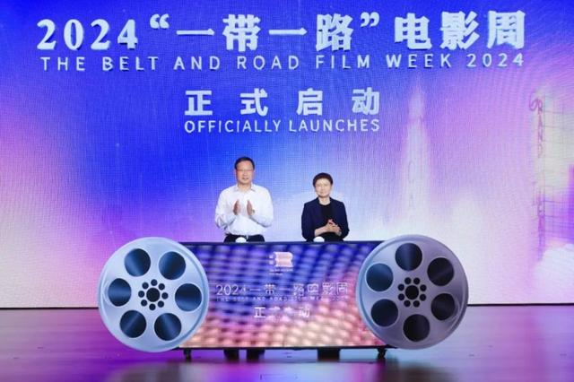
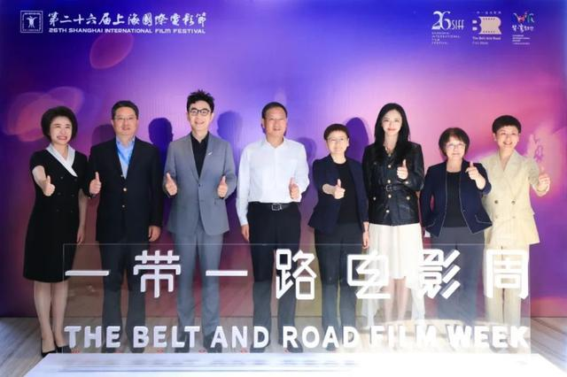
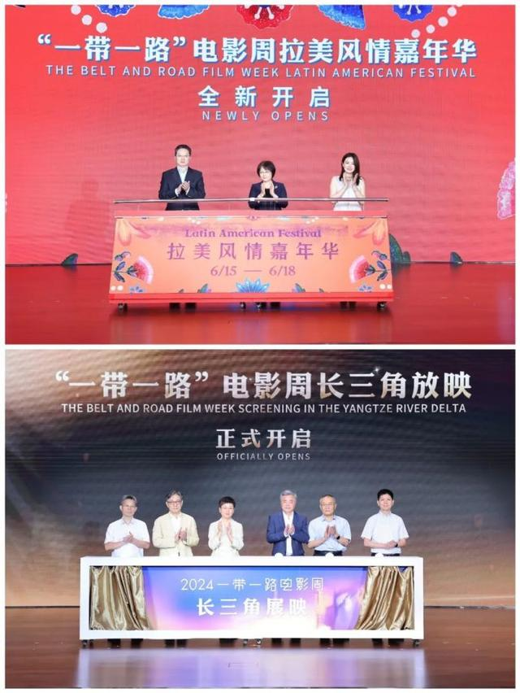

第26届上海国际电影节“一带一路”电影周
6月15日，第26届上海国际电影节“一带一路”电影周在上海国际旅游度假区申迪文化中心开幕。本届电影周继续秉持“加强文化交流、深化产业联动、促进共建共享”的宗旨，助力共建国家电影交流合作持续走深走实。据悉，本届电影周邀请到了18个国家和地区的40多位国际电影人，20多家中外电影机构参加，精选了18部影片在上影节进行65场展映，并有6部优秀影片将在长三角6家影院进行36场巡展，吸引更多观众关注来自“一带一路”共建国家的最新电影佳作。
上海市委常委、浦东新区区委书记朱芝松，上海市副市长、上海国际旅游度假区管委会主任刘多共同开启本届“一带一路”电影周。上海市人民政府副秘书长尚玉英，上海市委宣传部副部长、市精神文明办公室主任潘敏，浦东新区区委常委、度假区管委会党组书记、常务副主任金梅，上海申迪(集团)有限公司党委书记、董事长杨劲松，浦东新区区委常委、宣传部部长黄玮出席。
今年是“一带一路”倡议进入第十一个年头，也是上海国际电影节发起“一带一路”电影节联盟、创设“一带一路”电影周六周年。六年来，从浦东走出的“一带一路”电影周与“一带一路”电影节联盟，为共建国家电影、电影人、电影机构创造了更多合作契机。也有越来越多中国年轻电影人，通过联盟平台将中国故事带到海外各大电影节，成为世界深入了解中国的窗口，成为“一带一路”倡议下文化交流与产业合作的重要节点。2023年10月，“一带一路”电影节联盟被列入第三届“一带一路”国际合作高峰论坛成果清单。
“一带一路”电影周一直致力于推广多元电影，是共建国家文化共赏和民心相通的重要平台。六年来，电影周共展映了115部由“一带一路”电影节联盟成员推荐的共建国家影片，已经成为上海国际电影节的重要单元。今年电影周也精选了18部影片在上影节进行65场展映，并有6部优秀影片在长三角6家影院进行36场巡展，相较往年周期更长、场次更多，能够让长三角地区观众走进影院，在家门口感受上海国际电影节的光影魅力以及世界各地的风土人情。
电影周开幕式上，中国电影(11.320, 0.14, 1.25%)家协会副主席、清华大学传播学院博士生导师、澳门科技大学电影学院院长兼博士生导师尹鸿，中国电影家协会副主席、中国美术家学会会长霍廷霄，中国香港著名编剧、导演、监制，香港电影金像奖董事局成员陈嘉上等影视文旅领域的杰出专家和学者获颁首批上海国际旅游度假区“幸福文旅发展顾问”证书。他们将用深厚的专业知识和对行业发展深刻的洞察力，为度假区幸福文旅发展提供宝贵的建议和策略。
本届电影周同时邀请知名电影人大鹏和姚晨作为推广大使，并为北京舞蹈学院前院长李续，中国电影制片人协会常务理事、北京壹同传奇（陈思诚）影视文化有限公司董事长陈胜奇，优秀青年歌手、舞者金子涵颁发首批上海国际旅游度假区“幸福大使”证书，希望通过他们的个人影响力推介度假区旅游资源，助力度假区文旅产业发展。
作为上海国际旅游度假区影视文化产业发展的一张“名片”，“一带一路”电影周在增进产业相互交流和促进产业发展上也发挥了重要作用。从去年开始，度假区又有50余家影视文创企业入驻度假区或开展意向合作。10家新引进影视文创企业、10家新启动影视文创项目、10家新意向合作影视文创企业与度假区管委会在开幕式上进行签约，涉及影视文娱、演艺、旅游、商业、会展、体育等领域，业态非常丰富，也将进一步推动文化旅游创意产业要素在度假区集聚，助力度假区培育文旅融合创新发展新动能，成为现代化文旅新质生产力引领区、创新创意持续活跃的高质量文创产品创新策源地和首发地。
“一带一路”电影周启动活动结束后，朱芝松率队前往比斯特上海购物村调研，了解购物村项目运营情况，推进区域后续发展计划更好落地实施。
“一带一路”电影周举办期间，比斯特上海购物村将同步举办“拉美嘉年华”活动，通过地道的拉丁美食、丰富多彩的拉美风情表演以及琳琅满目的手工艺品，让市民能够“足不出沪”饱览拉美文化。区领导一行边走边看，深入参与体验“拉美嘉年华”活动。朱芝松指出，比斯特上海购物村是浦东新区重要的休闲旅游目的地和购物体验目的地之一，很高兴看到比斯特上海能够取得良好的经营业绩，希望未来能够继续做大规模、做强功能，持续提升环境体验舒适度，吸引更多市民游客到访体验。度假区作为上海建设国际文化大都市和世界著名旅游城市的重要承载区，当前已经启动了“东方乐城”的规划建设，相信比斯特上海会有更好的发展前景。